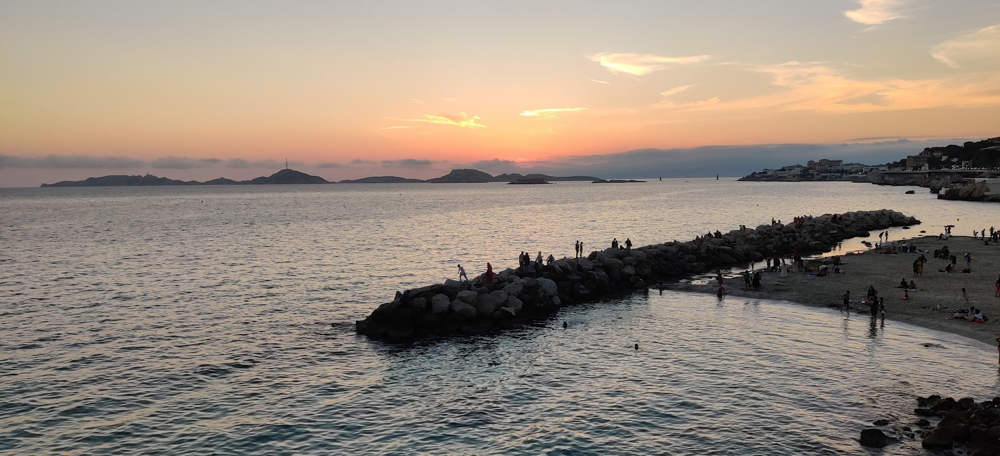
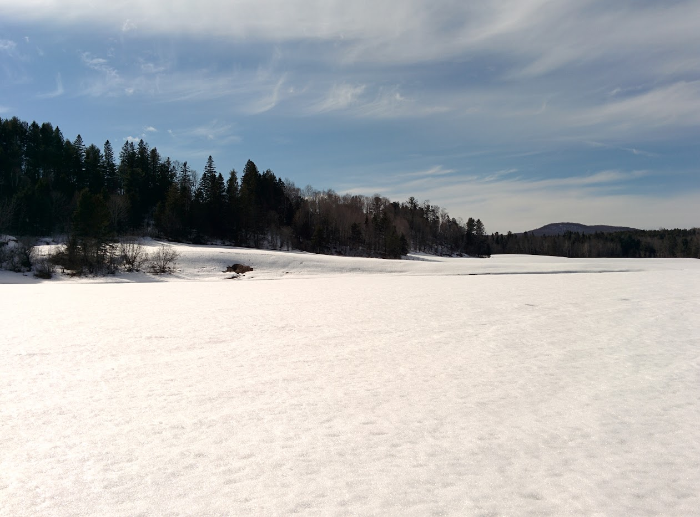
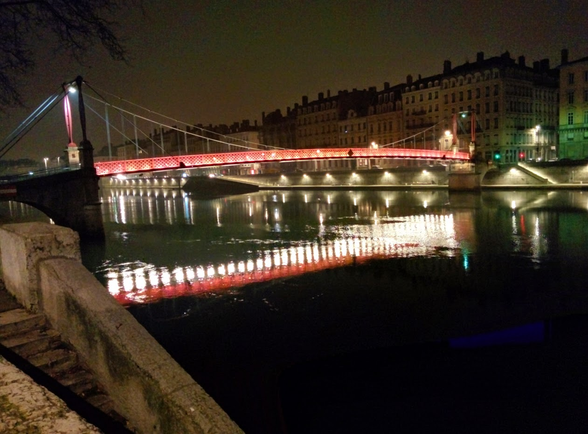
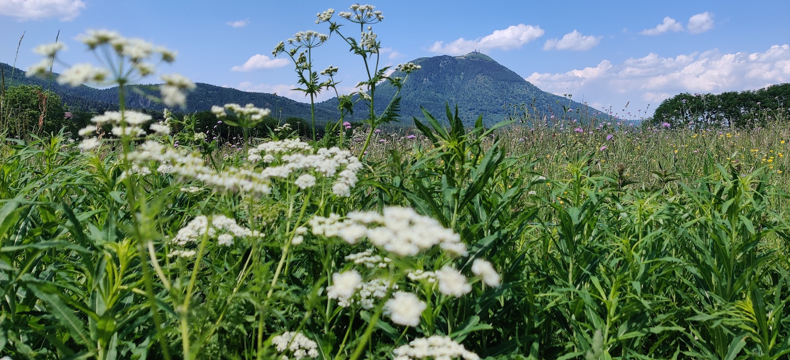

Bio
Topic : I started a postdoc in 2019 with Andrea Brovelli at the Institut de Neurosciences de la Timone. I studied how complex cognitive functions are encoded by distributed networks. The goal was to identify local encoding such as pairwise and higher-order interactions supporting the implementation of reinforcement and causal learning in humans using intracranial EEG.
Key publications : Combrisson et al., NeuroImage (2022); Combrisson et al., JOSS (2022)
Topic : After completing my PhD, I made a first short postdoc with Karim Jerbi at the University of Montréal.
Key publications : Combrisson et al., PLoS Comp. Biol. (2020)
Topic : I made my PhD thesis in the Centre de Recherche en Neurosciences de Lyon with Karim Jerbi (CRNL, UDeM) and Aymeric Guillot (LIBM). The goal of my PhD was to infer hand movement directions from human intracranial local field potentials. To this end, I used data-driven machine-learning approaches to explore the neural tuning of features like LFP power, phase and phase-amplitude coupling.
Key publications and preprints :
- Combrisson et al., Biorxiv (2023)
- Combrisson et al., Journal of Neuroscience Methods (2020)
- Combrisson et al., NeuroImage (2017)
Topic : I completed both a master degree in medical imaging and a Biomedical Engineering Degree at University of Lyon (Polytech)
Topic : Intensive two-year study course preparing for the competitive entrance examinations to highly-selective French institutions (MPSI, ex Math Sup / Math Spé)
